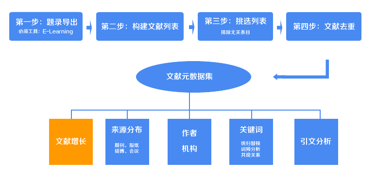
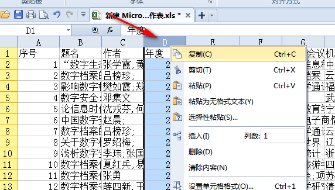
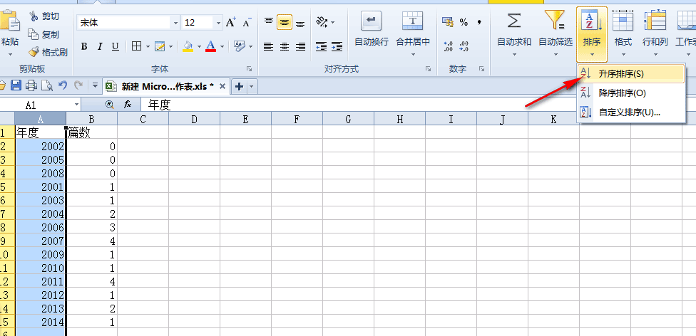

文献年度统计工具

在上一步中，你已经获得了Excel格式的文献元数据集，现在我们利用元数据集中的年度，对文献年度做统计，统计出每一年发表了几篇文章，并且利用Excel制作统计图。
打开上述的Excel文件，全选年度那一列，复制（如图）。

复制好了吗？把复制好的内容直接黏贴到下面的文本框中。
和之前你做的一样，你将得到一个经过统计好的txt文档（documents_meta_data_niandu.txt），直接复制txt文档中的内容到一个excel中，对年份进行排序，利用Excel来实现数据的图形化。具体如何进行excel中的年度图表统计请参考这篇文章。有的时候你不单单是要统计全部年度，你可以通过Excel表格对文献元数据集进行筛选（怎么筛选不多讲），把筛选后的年份列表拷贝到这里，从而获得对应的年度分布。
